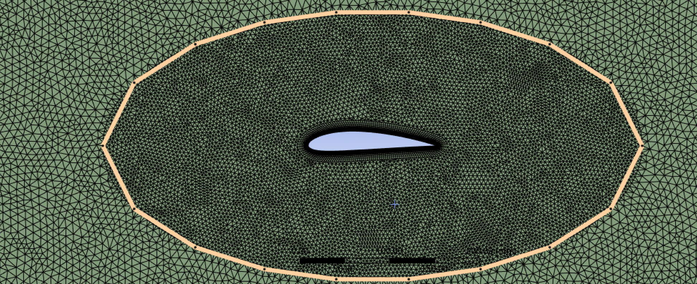
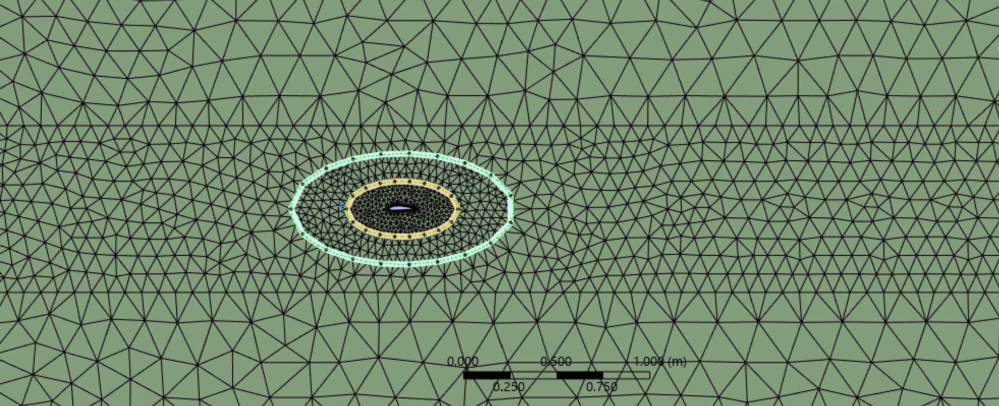
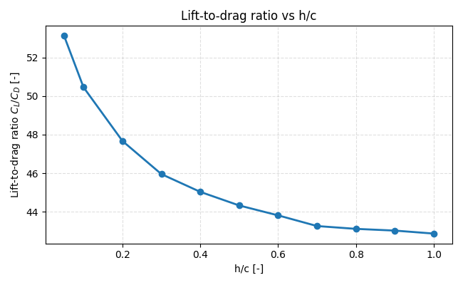

Overview
Why I did this
Ground effect is important when wings, drones or vehicles operate close to a surface. In this project, I investigated how the distance to the ground influences lift, drag and aerodynamic efficiency.
ANSYS Fluent · CFD · Aerodynamics
A CFD study of how ground clearance changes the aerodynamic efficiency of a NACA 4415 airfoil.


Overview
Ground effect is important when wings, drones or vehicles operate close to a surface. In this project, I investigated how the distance to the ground influences lift, drag and aerodynamic efficiency.
Method
A NACA 4415 airfoil was modelled in ANSYS Fluent. Several ground clearances were tested and compared using lift coefficient, drag coefficient and lift-to-drag ratio.
Results
The lift-to-drag ratio is highest at the smallest ground clearance. As h/c increases, the ground effect becomes weaker and the aerodynamic efficiency gradually approaches the free-flight situation.

Takeaway
CFD can make aerodynamic behaviour visible before physical testing. The project helped me understand how mesh quality, boundary conditions and post-processing influence engineering conclusions.
Tools
ANSYS Fluent, airfoil geometry generation, boundary-condition setup, aerodynamic coefficients and result interpretation.